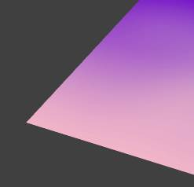
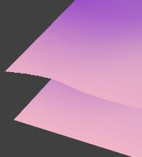

|
|
|
|
Flags
|
кодированное значение настроек альфы.
ПКМ по флагу вызывает окно настроек.
Бывает проще поставить нужный флаг и не углубляться в настройки.
Обращайте внимание, некоторые флаги могут создавать пустые строки.
По видимости, это нормально.
См. примечание о флаге 12175 в той таблице.
Т.е. флагом можно получить значения не возможные иным путем.
Общее кол-во доступных флагов 65535. Т.е. 16битное число.
Максимальный номер проверенного и приносящего что-то полезное, флага, был 15085.
Возможно, выше 16000 значения будут повторяться. Либо не давать ничего полезного вовсе.
|
|
Которые включают следующие разделы:
|
|
|
включает использование смешивания альфы.
В результате, получается мягкий край альфа канала текстуры, также используют полутона.
В большинстве случаев, смешивание совершенно необходимо!
Однако, включение смешивания несколько отрицательно воздействует на фпс.
Чем больше моделей со смешиванием в кадре, тем ниже фпс.
Поэтому, использование смешивания не рекомендуется для использования в моделях растительности.
Либо иных случаев, где в сцене находится много подобных объектов.
Но!
Смешивание совершенно необходимо при создании "стеклянных" (полупрозрачных) объектов.
Если оно выключено, то находящиеся (внутри витрины) прозрачные же объекты, могут стать невидимыми.
Да, альфа на альфу = дыра. О чем у нас есть ряд заметок.
Примечание.
Само по себе, Смешивание, можно выключать и это не приведет к исчезновению прозрачности объекта!
Но если одновременно выключить и "смешивание" и "тестирование" - прозрачность отключится.
Т.е. если включено Тестирование, но выключено смешивание, прозрачность объекта сохраняется с учетом метода тестирования и указанного значения тресхолда.
Также, в некоторой степени, на это, влияет прозрачность указанная в материале.
|
|
|
|
|
|
4844 - tr 12.
флаг альфы на верхнем слое.
Т.е. активно только тестирование.
|
4332
т.е. выключено и смешивание и тестирование.
Объект стал непрозрачным полностью.
|
4845
включено и тестирование и смешивание.
4845 тресхолд 55 вместо 12-ти.
Здесь хорошо видно увеличение зоны фильтрации градиента.
|
4333
включено только смешивание.
Если приглядеться, то будет заметна более мягка граница по нижнему краю.
Т.е. отключение тестирования полностью убрало "фильтрацию, отсечение" некоторых пикселей по краю альфа канал текстуры.
|
|
|
Режимы смешивания.
Собственно микширование этих значений и позволяет получать различные эффекты в игре.
(С) откду-то-из-инету-энтого(С)
Параметр src определяет, как получить коэффициент k1 исходного цвета пикселя, a dst задает способ получения коэффициента k2 для цвета в буфере кадра.
Для получения результирующего цвета используется следующая формула: res=сsrc*k1+cdst*k2, где сsrc – цвет исходного пикселя, cdst – цвет пикселя в буфере кадра (res, k1, k1, сsrc, cdst – четырехкомпонентные RGBA-векторы).
(С)
|
|
Sourse Blend Mode
|
"исходный" режим смешивания.
|
|
Destination Blend
|
«направление» оного.
|
|
В каждом одинаковые позиции:
|
|
One
|
The ONE modifier replaces the specified pixel in the blending equation with white while
Проще говоря, "засвечивает" белым цветом.
Этот тип смешивания используется (в основном) во всякого рода "светящихся" объектах.
Пламя свечей, глаза призраков, ореолы и т.п.
|
|
Zero
|
modifier replaces the pixel with black
Проще говоря, заливает чорным.
Практически нигде не используется.
Т.е. не было отмечено интересного случая, где этот флаг было бы уместно применить.
|
|
Src Color
|
modifier replaces the specified pixel with the color of the source pixel
Влияет на цвет пикселя текстуры.
Используется в редких случаях, там где требуется играть именно цветом, а не (контуром).
|
|
InvSrc Color
|
replaces the pixel with the source color subtracted per component from white
Инвертирует цвет текстуры (также влияет цвет материала объекта)!
Используется в редких случаях, см. тут.
|
|
Dst Color
InvDst Color
|
DESTCOLOR and INVDESTCOLOR are the same as SRCCOLOR and INVSRCCOLOR except that the destination pixel's color is used.
|
|
Src Alpha
|
multiplies each of the specified pixel's components by the source pixel's alpha value while
Используется (только) альфа канал текстуры.
Т.е. не влияет на цвет объекта.
В отличие от One, Zero и Color(s).
|
|
Inv Src Alpha
|
uses one minus the source pixel's alpha value
— инверсия альфы.
|
|
Dst Alpha
InvDst Alpha
|
similar except they use the destination pixel's alpha value.
|
|
Src Alpha Saturate
|
takes the lesser of the source pixel's alpha or one minus the destination pixel's alpha and places it in the red, green, and blue fields of the specified pixel. This mode sets the specified pixel's alpha to be 1(С)
— насыщение.
|
|
Далее идет раздел "тестирования".
Альфа-тестирование-это метод контроля того, какие пиксели рисуются, а какие нет.
Обращайте внимание, что объекты в одном файле, будут отображаться иначе, чем объекты в помещенные в мир.
Т.е. две плоскости (к примеру) в одной ноде, могут взаимодействовать друг с другом.
Но, не окажут подобного воздействия на объекты в мире игры, даже если те содержат альфу.
Т.е. в зависимости от настроек тестирования, взаимодействие объектов в локальном файле и в мире игры - будут различаться!
|
|
|
Включает тестирование альфа канала текстуры.
Более детальная проработка альфа-канала. Позволяет избавиться от ряда багов.
Может работать вместе со смешиванием.
Может работать без включения смешивания.
|
|
Alpha Test Function
|
тип проработки.
Оказывает заметное влияние на основные значения!
Улучшая проработку контура альфа канала текстуры, так и позволяя создавать ... анимации (в сочетании с альфа контроллером).
|
|
Значения тестирования:
|
|
Never
|
NEVER mode no pixels are ever written
объект, скорее всего, просто перестанет отображаться.
Это значение следует использовать только в особых случаях, когда требуется получить интересные результаты взаимного наложения разных объектов с альфа свойствами.
 - да, верхний слой стал невидимым. 7916 (смешивание отключено)
|
|
Greater
|
GREATER and GREATEREQUAL are the modes you typically use and blend the pixels into the framebuffer if their alpha value is greater than or greater-than-or-equal-to the threshold value
наиболее удобное для использования значение!
Избавляет от наложений (между объектами, что возникают при использовании 237го флага альфы) и качественно прорисовывает альфа-канал (по его контуру, позволяя ограниченно убирать "мутные" зоны).
 4844 тресхолд 55.
|
|
Always
|
In ALWAYS mode every pixel is alpha blended into the framebuffer while
Но виду, равно отсутствию флага тестирования.
Объект может потерять прозрачность.
|
|
Less
|
LESS and LESSEQUAL modes the pixels are blended if their alpha value is less than or less-than-or-equal-to the threshold value
часто приводит к полной прозрачности объекта.
Т.е. он становится невидимым.
Либо позволяет получать интересные результаты...
С поправкой на альфа канал текстуры + уровни тресхолда + взаимоналожение объектов с альфой друг на друга + альфа контроллер... т.е. это значение тестирование следует использовать в особых случаях, когда требуется получить какой-то интересный эффект.
В данном случае (за счет самой текстуры) получается эффект "опускающейся решетки", или "гермодверей".
Половинки текстуры идут на встречу друг другу.
|
|
Equal
|
EQUAL and NOTEQUAL blend the pixel into the framebuffer if the alpha value is equal or not equal to the threshold value, respectively
объекты видны через наложения их контуров на другой объект!
Интересное значение. Возникает своего рода «тень» различимая по наложению силуэта альфы на некий другой объект имеющий альфу.
Но в обычных случаях, объект, становится полностью прозрачным.
Т.е. этот флаг, также следует использовать только в особых случаях.
Здесь не отображено, но получается эффект движущихся волнистых молний.
|
|
Less or Equal
|
аналогично выше отмеченному.
Флаг следует использовать только в особых случаях!
В основном получается эффект "гермодверей".
|
|
Not Equal
|
равно отсутствию флага тестирования, т.е. выглядит, как полная непрозрачность объекта...
Т.е. это значение следует использовать только в сочетании с чем-то другим.
Т.е. иным объектом который также использует некие альфа свойства.
|
|
Greater or Equal
|
почти как и Греатер, но контур более «рваный», впрочем, это зависит от уровня тресхолда.
|
|
В большинстве случаев, наилучшее значение это - Greater с небольшим значением Tresholdа.
Тестирование может давать иные результаты, в зависимости от изменения базовых настроек Бленда.
В ряде случаев, Equal и Less могут давать обратные результаты, т.е. Пропадает непрозрачная часть текстуры, а то, что должно быть прозрачным становится видимым при наложении на другие объекты модели!
GL_ALPHA_TEST (он "остеивает" все точки прозрачнее указанного тобой коф. прозрачности):
glEnable(GL_ALPHA_TEST);
glAlphaFunc(GL_GREATER, коф. прозрачности);
ВАЖНО!
Результаты работы методов смешивания и тестирования могут отличаться на NV видео картах, от AMD(ATI).
|
|
Alpha test Treshold
|
порог альфы.
Убирает муть на границе альфы.
Чем выше, тем ровнее грани. Но слишком большие значения могут «скрыть» всю модель.
|
|
No Sorter
|
отсекает рендеринг объектов находящихся ЗА объектом содержащим этот флаг.
Может оказывать интересный эффект при наложении Объекта на Мир игры.
|
|
|
Objects with the "no sorter" setting will not be sorted during rendering.
The sorting of objects insures proper drawing of alpha blended objects, but costs time to sort the objects.
Флажок "NoSorter" заставляет систему сортировки alpha игнорировать объекты, затененные этим материалом (С)
|